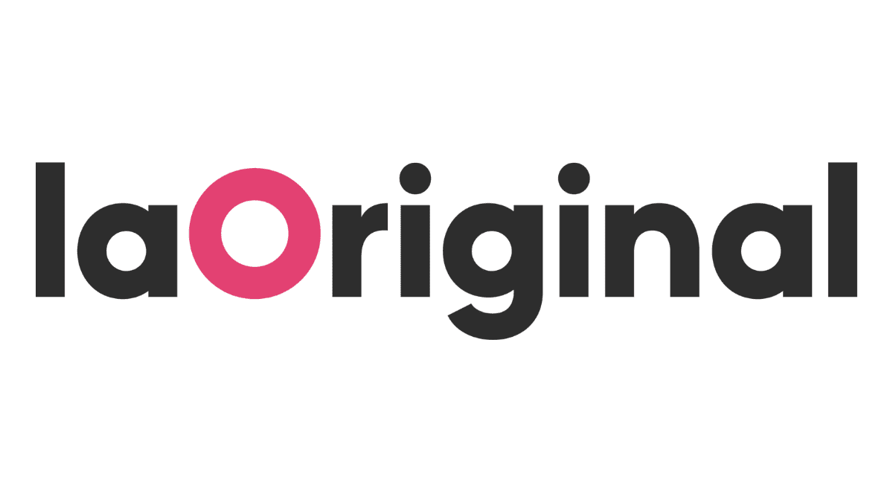
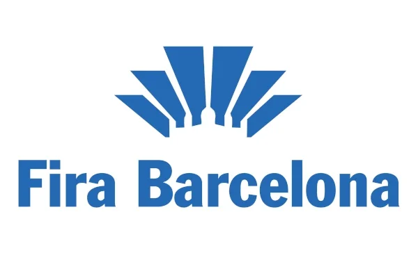

Apasionado por el Marketing, la Comunicación y los Negocios.
Disfruto creando ideas, conectando con las personas y contribuyendo
a proyectos que generan un valor real.
¡Hola!
Soy Víctor, estudiante de Comunicación Interactiva de Barcelona.
Me apasionan el marketing digital, el branding, la comunicación y
el desarrollo de negocio.
Durante mis estudios he tenido la oportunidad de participar en campañas
de marketing, organización de eventos y proyectos de comunicación,
desarrollando mi creatividad y pensamiento estratégico.
Mi experiencia internacional en Bruselas estudiando comunicación y empresa
me ha enseñado a adaptarme rápidamente a entornos multiculturales,
comunicarme con personas de diferentes procedencias y superarme continuamente.
Formación
Universitat Autònoma de Barcelona
Grado en Comunicación Interactiva y Empresa
2022 - Actualidad
IHECS - Brussels School of Journalism & Communication
Programa Internacional de Intercambio
Comunicación, Marketing y Empresa
2026
Colegio Padre Damián Sagrados Corazones
Bachillerato de Ciencias Sociales
2020 - 2022
Experiencia
Prácticas en Marketing y Comunicación
Universitat Autònoma de Barcelona
Desarrollo de campañas de marketing.
Creación de contenido para la promoción académica.
Promoción de grados universitarios y áreas de estudio.
Apoyo en comunicación digital.

LaOriginal Communication
LaOriginal Communication
Creación de campañas de marketing.
Apoyo en proyectos de comunicación.
Coordinación de eventos.
Participación en eventos como ISE y el Ilustre Colegio de la Abogacía de Barcelona.

Fira de Barcelona
Fira de Barcelona
Coordinación de eventos internacionales.
Mobile World Congress.
Atención y asistencia a los asistentes.
Apoyo en la organización logística.
Asesor Comercial Deportivo
Decathlon
Asesoramiento personalizado a los clientes según sus necesidades.
Impulso de las ventas mediante una excelente atención al cliente y conocimiento del producto.
Gestión eficiente del stock y correcta presentación de los productos en tienda.
Creación de relaciones de confianza con los clientes para ofrecer la mejor experiencia de compra.
Habilidades
Marketing Digital
Creación de Contenido
Comunicación
Redes Sociales
Desarrollo de Negocio
Coordinación de Eventos
Pensamiento Creativo
Resolución de Problemas
Trabajo en Equipo
Gestión de Proyectos
Ventas y Persuasión
HTML, CSS y JavaScript (nivel básico)
Fundamentos de Bases de Datos
Idiomas
Español — Nativo
Catalán — Nativo
Inglés — C1
Francés — A2
Lo que puedo aportar
Ideas innovadoras
Mentalidad internacional
Creatividad
Capacidad de adaptación
Excelentes habilidades comunicativas
Actitud positiva
Curiosidad y ganas de aprender
Trabajo en equipo
Visión empresarial
Conocimientos de marketing
Más allá de mi CV
Disfruto aprendiendo nuevas habilidades, descubriendo nuevas ideas
y trabajando con personas de diferentes culturas.
Me apasionan el deporte, la comunicación y el marketing digital.
Creo que la curiosidad, el compromiso y el trabajo en equipo son
los ingredientes clave detrás de cualquier proyecto de éxito.